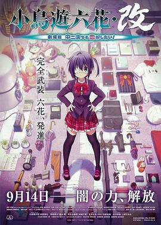

小鸟游六花·改 剧场版 中二病也要谈恋爱！ / 小鳥遊六花・改 ～劇場版 中二病でも恋がしたい！～
又名：中二病也要谈恋爱！剧场版 小鸟游六花・改
总集篇 + Ren的预告。
同系列作品
豆瓣作品页于 2026-09-04T12:06:36+10:00 提供的列表 · 列表范围未知
- 中二病也要谈恋爱！ / 中二病でも恋がしたい！ · 看过 · ★★★★★
- 中二病也要谈恋爱！恋 / 中二病でも恋がしたい！戀 · 看过 · ★★☆☆☆
- 剧场版 中二病也要谈恋爱！ -Take On Me- · 本档案未收录
- 中二病也要谈恋爱！ Lite · 本档案未收录
- 中二病也要谈恋爱！ SP · 本档案未收录
- 中二病也要谈恋爱！ 闪耀的圣爆诞祭 / 中二病でも恋がしたい！ 煌めきの…聖爆誕祭 · 看过 · ★★★★★
- 剧场版 中二病也要谈恋爱！ Lite / 映画 中二病でも恋がしたい！ Lite · 看过 · ★★☆☆☆
- 中二病也要谈恋爱！恋 Lite · 本档案未收录
- 中二病也要谈恋爱！恋 SP · 本档案未收录
- 中二病也要谈恋爱！恋 再生的邪王真眼默示录 · 本档案未收录
- 中二病也要谈恋爱! -Take On Me- SP · 本档案未收录
页面标示「全部 12」；本次记录含 11 个条目，不保证包含全部系列作品。
其他作品页中的关联
- 中二病也要谈恋爱！ / 中二病でも恋がしたい！ 的作品页曾将本作列入同系列（观测于 2026-09-04T12:13:26+10:00）。
- 中二病也要谈恋爱！恋 / 中二病でも恋がしたい！戀 的作品页曾将本作列入同系列（观测于 2026-09-04T12:06:05+10:00）。
- 剧场版 中二病也要谈恋爱！ Lite / 映画 中二病でも恋がしたい！ Lite 的作品页曾将本作列入同系列（观测于 2026-09-04T12:06:39+10:00）。
- 中二病也要谈恋爱！ 闪耀的圣爆诞祭 / 中二病でも恋がしたい！ 煌めきの…聖爆誕祭 的作品页曾将本作列入同系列（观测于 2026-09-04T12:08:29+10:00）。
作品信息
| 导演 | 石原立也 |
| 编剧 | 花田十辉 |
| 主演 | 内田真礼 / 福山润 / 赤崎千夏 / 浅仓杏美 / 上坂堇 / 仙台惠理 / 福原香织 / 设乐麻美 / 天野由梨 / 冲佳苗 / 保志总一朗 / 长妻树里 / 井上喜久子 / 织田梨惠子 / 鸟田裕志 / 松尾大亮 / 岩男润子 / 中博史 |
| 类型 | 动画 |
| 制片国家/地区 | 日本 |
| 语言 | 日语 |
| 上映日期 | 2013-09-14(日本) |
| 片长 | 96分钟 |
| IMDb | tt3203996 |
最后一次看到是 2026-09-04T09:54:40+10:00 · 豆瓣原页